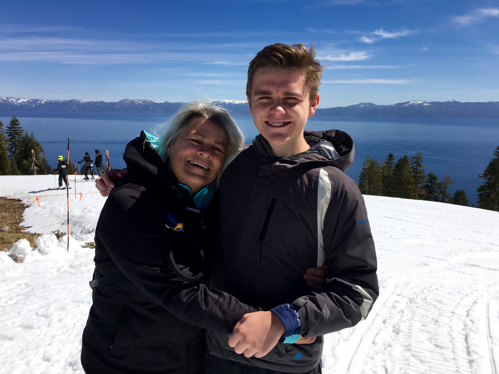

Keltin Grimes
I am a student at Enloe High School in Raleigh, NC. I was born in Lexington, Kentucky, lived in State College,
Pennsylvania for a while and now live in Raleigh with my mother, father, sister, dog, and cat. Feel free to look around this website
for a short introduction to me.

Fun Facts
I am a die-hard Kenctucky basketball fan, and just happen to be living within 45 minutes of two of our greatest rivals, UNC and Duke.
My favorite place to travel is Lake Tahoe, you may notice quite a few pictures from there, including the background.
Development
I built this website from scratch over a period of about three weeks using HTML, CSS, and javascript. Not only was
this a fun project for me, but I also learned a lot about web design and coding. The website is hosted by GitHub and the interactive map is
curtesy of amCharts. All photos are property of Keltin Grimes.